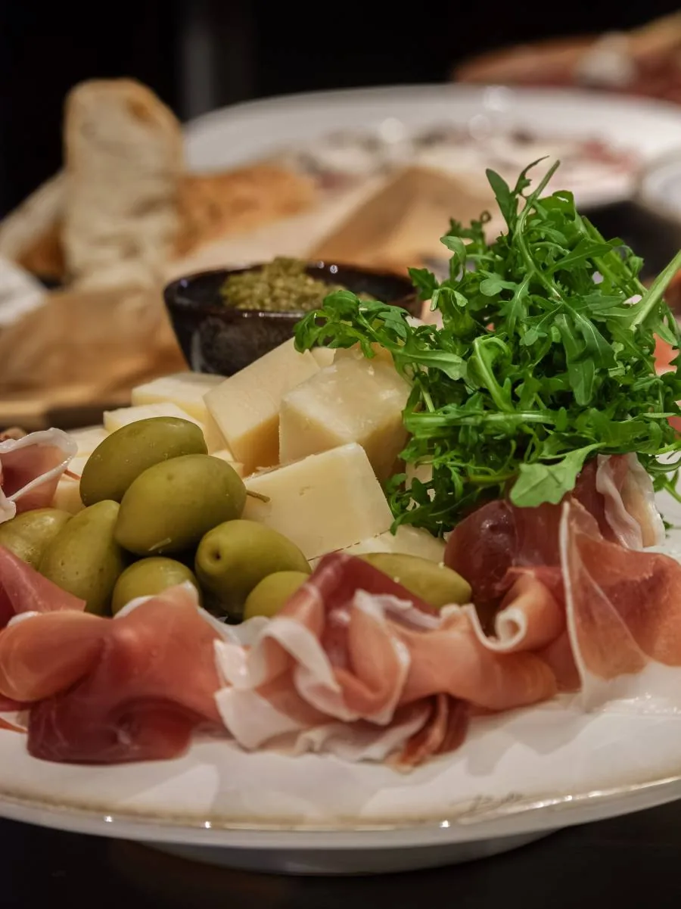
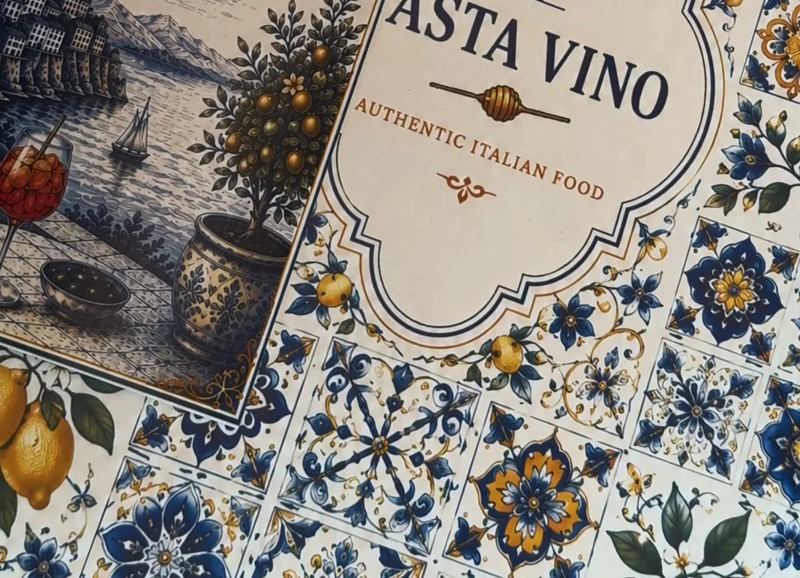
Om Pasta Vino
Et varmt og uformelt møtested
Et varmt og uformelt møtested hvor fersk pasta, gode råvarer og ekte italienske smaker står i sentrum. Hos oss får du hjemmelagde retter laget med kjærlighet, inspirert av tradisjonelle italienske kjøkken.
Hos Pasta Vino handler det om mer enn bare mat. Vi ønsker å skape en avslappet atmosfære hvor venner, familier og naboer kan samles rundt gode smaker og hyggelige øyeblikk. Fra kremet carbonara og fersk tagliatelle til klassiske italienske kjøttretter og hjemmelagde desserter, lager vi maten fersk hver dag med nøye utvalgte råvarer.
Utforsk menyen →Fra kjøkkenet
Laget fra bunnen, hver dag
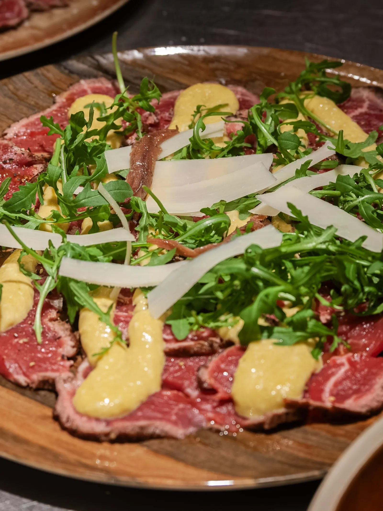
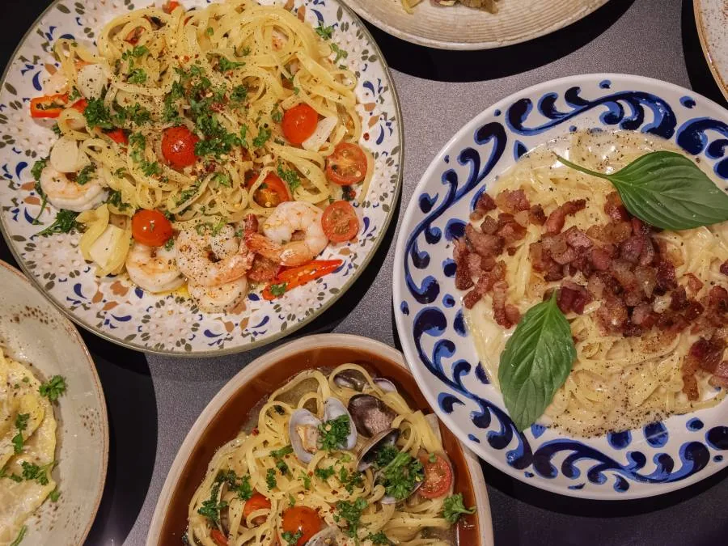
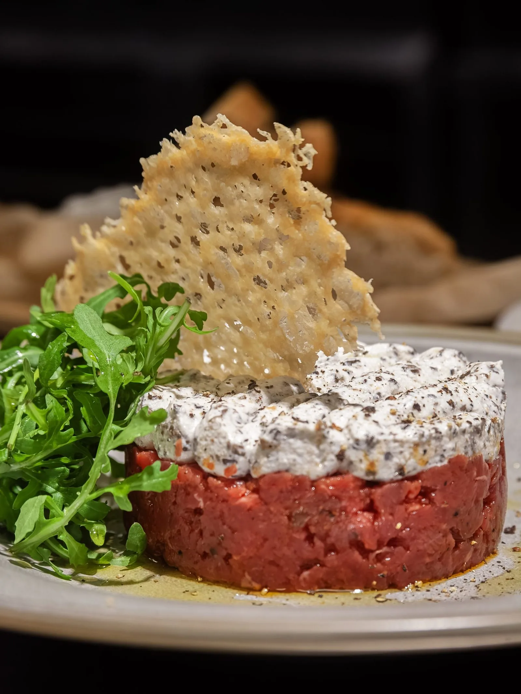
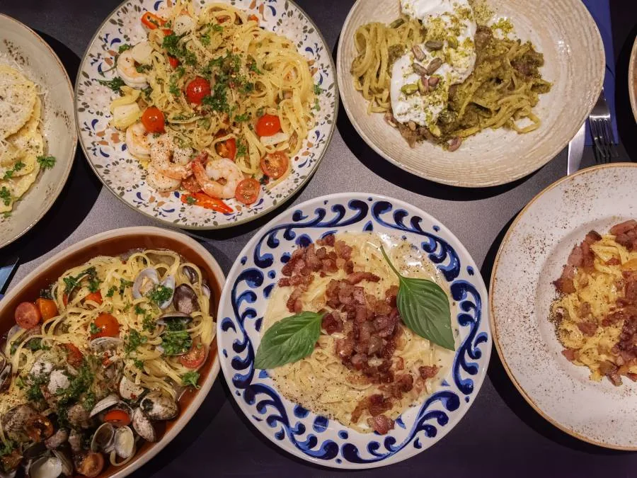
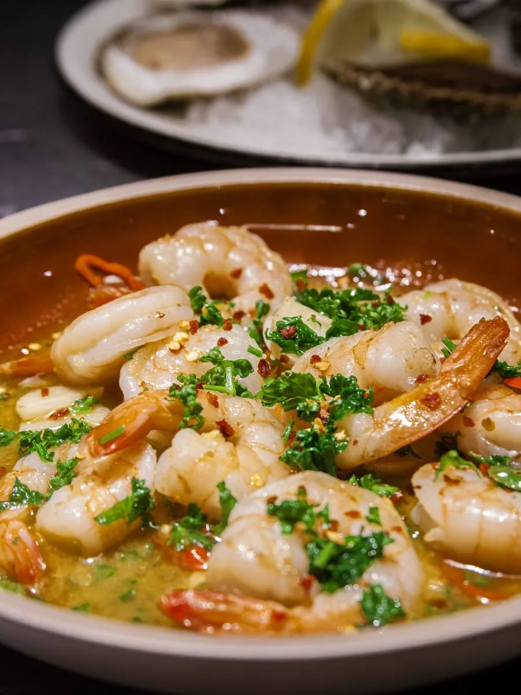
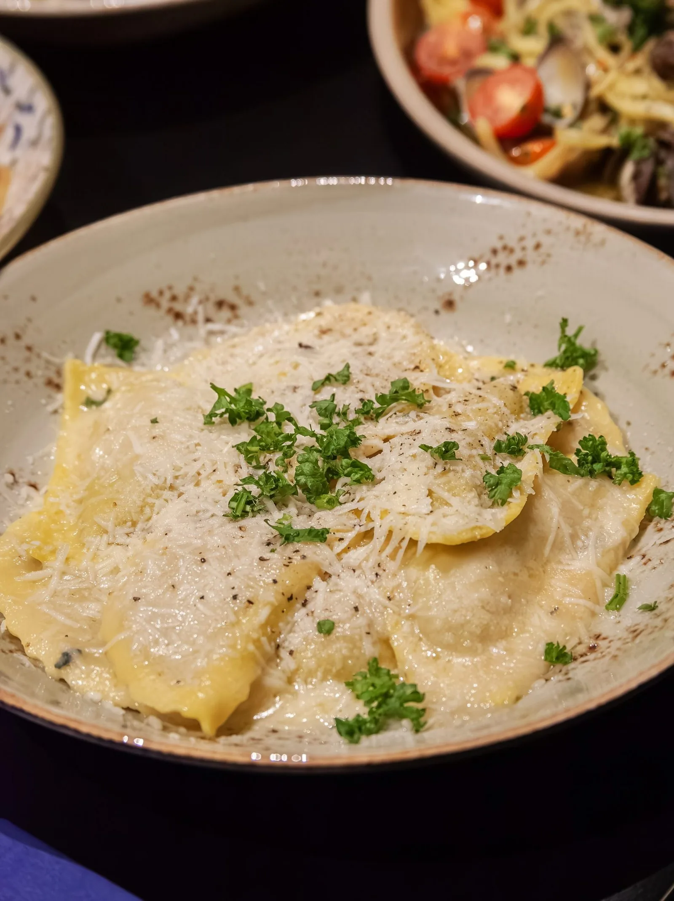
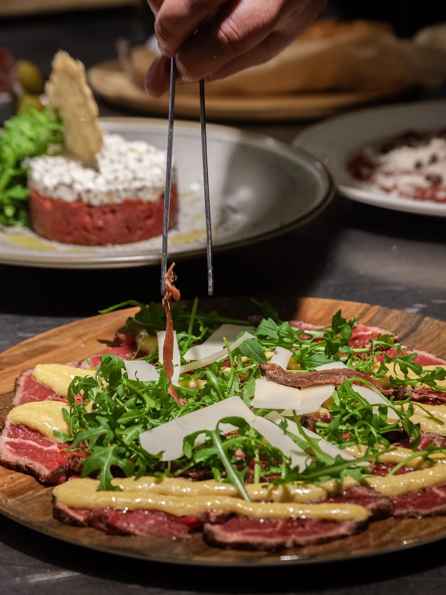
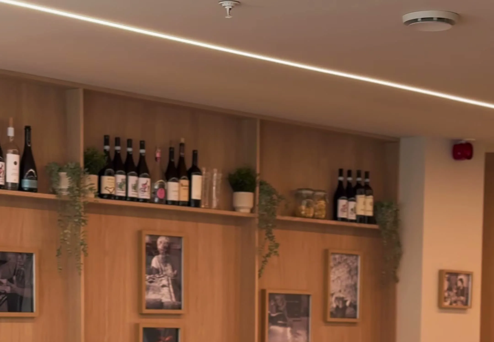
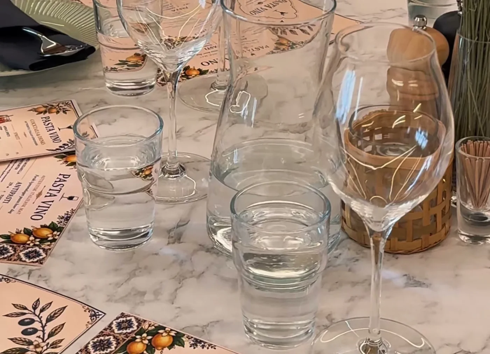
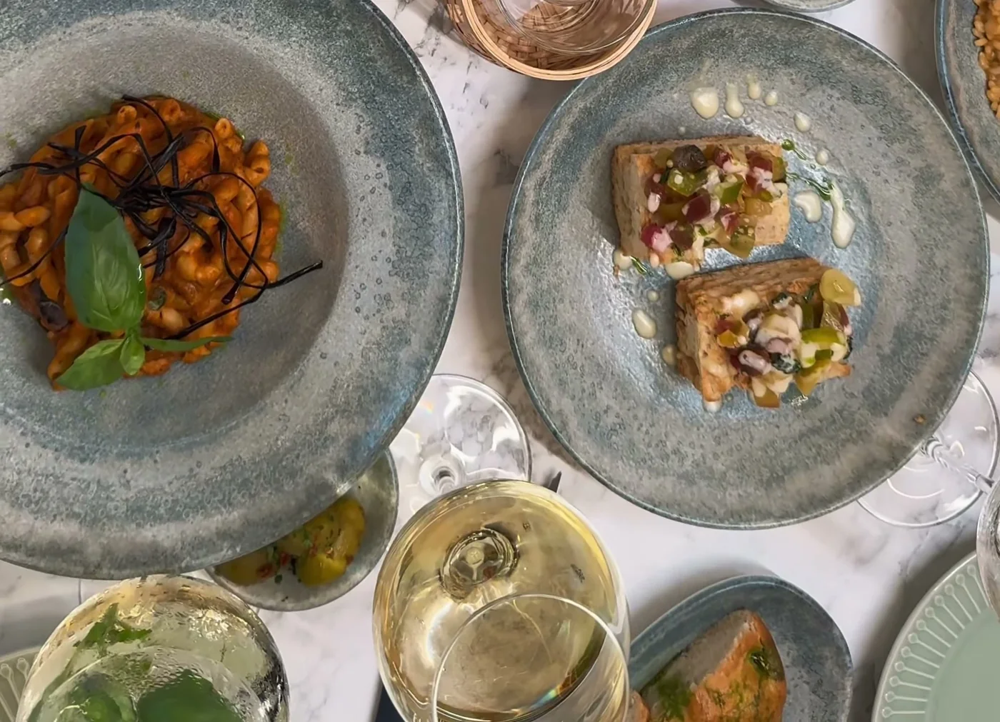
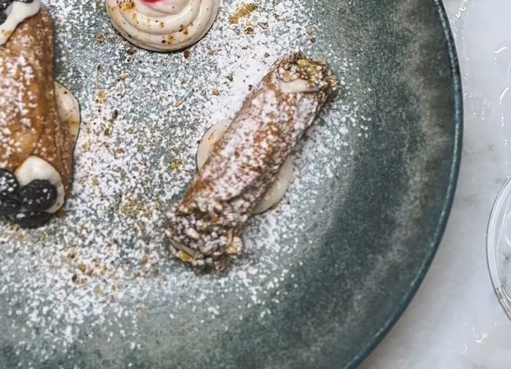
Anmeldelser
Hva gjestene sier
«Helt nydelig mat, her leverer de bare kvalitet.»
«Veldig god mat, serviceinnstilt og hyggelig personale og rask servering.»
Åpningstider
Vi anbefaler å reservere bord
Vi elsker å ta imot gjestene våre, men anbefaler gjerne å reservere bord på forhånd for å sikre den beste opplevelsen hos oss.
| Mandag | 15:00 – 21:30 |
|---|---|
| Tirsdag | 15:00 – 21:30 |
| Onsdag | 15:00 – 21:30 |
| Torsdag | 15:00 – 21:30 |
| Fredag | 15:00 – 22:30 |
| Lørdag | 15:00 – 22:30 |
| Søndag | 15:00 – 21:30 |
Vi ønsker å være et sted du kommer tilbake til. Et sted for hverdagsmiddager, lange samtaler og gode opplevelser rundt bordet. Med varme omgivelser, italiensk inspirasjon og fokus på kvalitet ønsker vi å gi Sandviken en liten smak av Italia.